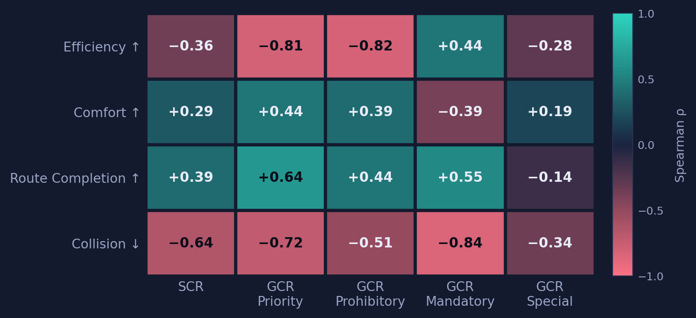
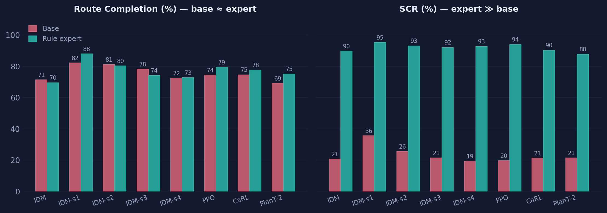
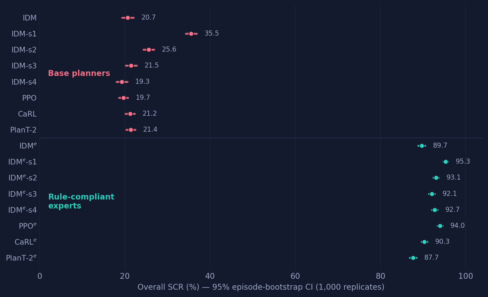

Demonstration videos
“There are no qualitative figures or demonstration videos showing what the simulation actually looks like […]. It is very difficult for a reader to gauge the visual or geometric quality of the scenarios.”
In this section, we provide demonstration videos to provide the visual quality of the scenarios as was suggested by the reviewer.
Baseline vs. rule-compliant planners
Same scene family, side-by-side: the base planner often violates the active traffic rule, while its rule-compliant twin respects the restriction.
Priority
Sign 2.1. Main road: the ego vehicle must yield to traffic approaching from the right at an equal-priority intersection.
Prohibitory
Sign 3.1. No entry ("brick"): the ego vehicle must not continue into the prohibited road segment.
Mandatory
Sign 4.2.1. Pass on the right: the ego vehicle must pass the obstacle strictly on the right side.
Sign 4.3. Roundabout: the ego vehicle must yield to traffic already in the circle.
Special Regulations
Sign 5.7.1. One-way entry: the ego vehicle must follow the permitted direction and avoid entering the wrong carriageway.
Sign 5.15.1. Lane directions: the ego vehicle must follow the allowed turn for its lane and not leave via a forbidden connector.
Figure readability
“Figures (especially Fig. 1, 2) are rendered with excessively small fonts, making them difficult to read.”
We provide updated versions of the figures below.
Figure 1 — Overview of TrafficRuleBench
Submission vs. revised teaser with larger fonts for readability.
Figure 2 — Data-Driven Scene Diversification
Distributions of scene-diversification parameters estimated on nuPlan.
Correlation analysis and Bootstrap CIs
“A correlation analysis between standard metrics and rule metrics, plus confidence intervals or fragment-level bootstrap estimates, would make the central benchmark claim more convincing.”
In this section, we provide illustrations for the tables and claims reported in our OpenReview response.
Correlation analysis
We conducted a correlation analysis comparing conventional metrics with our proposed compliance metrics (SCR, GCR, RCR). The results support our main claim that conventional driving metrics do not reliably reflect traffic-rule compliance.

Route completion stays essentially flat across every base-expert pair, while rule compliance jumps by 60-70%.

Bootstrap confidence intervals
For each planner and each of 1,000 replicates we resample episodes of every sign with replacement. For every base-expert pair the CIs are disjoint, so the compliance gap is not a point-estimate artifact.
